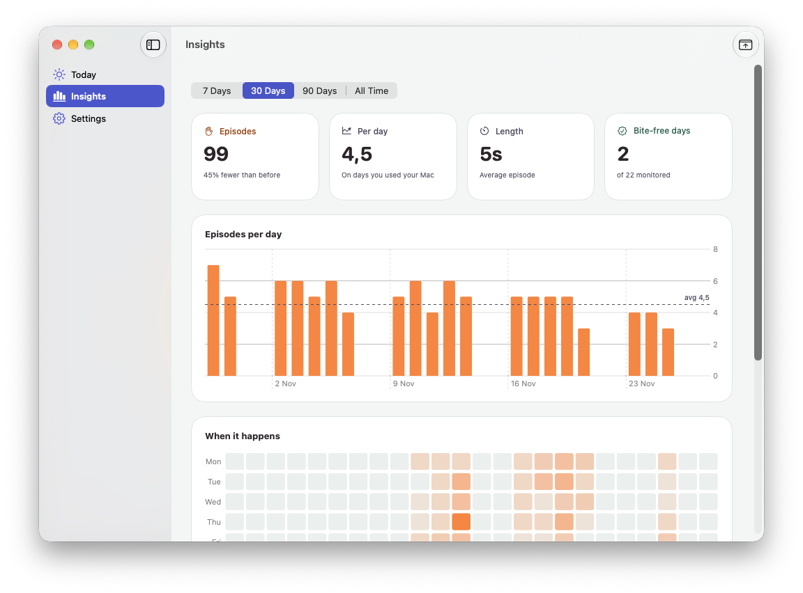

A banner when it happens
When your hand reaches your mouth, a small banner appears under the menu bar and names the app you’re in. It doesn’t take focus or switch Spaces, so you can keep typing.
NailBite watches through your Mac’s camera and tells you when your hand goes to your mouth. It runs entirely on your Mac, and it shows when and where you bite so you can work on the pattern.

When your hand reaches your mouth, a small banner appears under the menu bar and names the app you’re in. It doesn’t take focus or switch Spaces, so you can keep typing.
If biting continues, NailBite asks you to rest your hands for 30 seconds while a ring paces your breathing, four seconds in and four out. Giving your hands something else to do is the competing-response step of habit reversal training, a behavioral therapy used for nail biting. You can turn the reset off in Settings.

Insights groups detections into episodes, maps them by weekday and hour, and lists the apps you were in. If it’s always the morning standup in Zoom, you’ll see it. Bite-free days and streaks only count days you used your Mac.

Close the window and NailBite keeps watching. The menu bar panel shows how long you’ve gone without biting, today’s count and your streak, with buttons to pause or open Insights.

NailBite needs your camera, so here is exactly what happens to what it sees.
If macOS says the app is from an unidentified developer, go to System Settings → Privacy & Security and click Open Anyway. If you can’t see the menu bar icon, drag it out of Control Center.